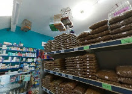
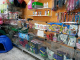
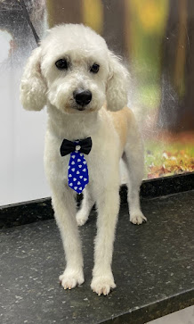

Ração, coleiras, guias e potes de água e comida para cães e gatos. Atendimento rápido por WhatsApp ou telefone, direto com quem cuida do seu bichinho no dia a dia.
Uma seleção pensada para cães e gatos de todos os portes — para comprar rapidinho e voltar pra casa.
Para filhotes, adultos e idosos — cães e gatos de vários portes.
Modelos e tamanhos variados, com fivela ajustável e conforto.
Pra passeios tranquilos, do filhote levinho ao cão mais forte.
Para água e ração, em tamanhos para cada tipo de pet.


*Fotos ilustrativas do tipo de sortimento — não são fotos da nossa loja.
Seu cão ou gato sai limpinho, cheiroso e bem cuidado — sem precisar ir longe.

Agende um horário para o banho e a tosa do seu pet direto pelo WhatsApp.
No Jardim Aurélio, fácil de chegar a pé ou de carro sem sair da região.
Segunda a sábado, das 9h às 19h — encaixa na rotina de quem trabalha.
Chama no WhatsApp ou liga direto — sem robô, sem enrolação.
Atendimento pelo WhatsApp: 9h às 17h20
Rua Maria Clara da Silva Sant'Anna, 3Jardim Aurélio, São Paulo - SPCEP 05857-380
Fala com a gente antes de vir — respondemos rapidinho.
Conta pra outros tutores como foi sua experiência — sua avaliação ajuda muita gente a encontrar a gente.